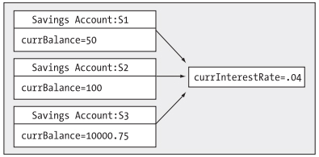
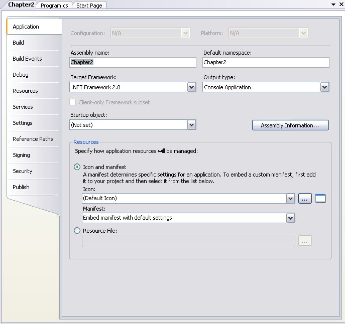

Chapter 3 - C# Language Fundamentals
Content
The content of this chapter are core topics regarding the C# language and the .NET platform, including
value-based and reference-based data types, decision and iteration constructs, boxing and unboxing mechanisms,
the role of System.Object, and basic class-construction techniques. Along the way, you'll also learn how to
manipulate CLR strings, arrays, enumerations, and structures using the syntax of C#.
To illustrate these language fundamentals, you'll take a programmatic look at the .NET base class libraries and
build a number of sample applications, making use of various types in the System namespace.
This chapter also examines a new C# 2005 language feature, nullable data types. Finally, you'll learn how to
organize your types into custom namespaces using the C# namespace keyword.
The Main() method
Every executable C# application must contain a class defining a Main() method, which is used to signify the entry point of the application.
The signature of Main() method is adorned with the public and static keywords. The public members are accessible from other types,
while static members are scoped at the class level (rather than the object level) and can thus be invoked without creating a new class instance.
In addition to the public and static keywords, this Main() method has a single parameter, which happens to be an array of strings (string[] args).
This parameter may contain any number of incoming command-line arguments.
It is permissible to construct your application's entry point using any of the following signatures (assuming it is contained within a C# class or
struct definition):
public static void Main(string[] args){}
public static void Main(){}
public static int Main(string[] args){}
Reads more about processing command-line arguments and specifying command-line arguments with Visual Studio at page 67, 68 of textbook.
Establishing member visibility
Members (methods, fields, constructors, and so on) of a given class or structure must specify their "visibility" level.
If you define a member without specifying an accessibility keyword, it is automatically defaults to private.
C# offers the method access modifiers shown in the following table.
| public |
Marks a member as accessible from an object variable as well as any derived classes. |
| internal |
Defines a method that is accessible by any type in the same assembly, but not outside the assembly. |
| protected internal |
Defines a method whose access limited to the current assembly or types derived from the defining class in the current assembly. |
| protected |
Marks a method as usable by the defining class, as well as any derived classes. Protected methods, however,
are not accessible from an object variable. |
| private |
Marks a method as accessible only by the class that has defined the method. In C#, all members are private by default. |
To illustrate the implications of these keyword, assume you created a class (SomeClass) using each of the possible member access modifiers.
class SomeClass
{
public void PublicMethod() {}
internal void InternalMethod() {}
protected internal void ProtectedInternalMethod() {}
protected void ProtectedMethod() {}
private void PrivateMethod() {}
void SomeMethod() {}
}
Establishing type visibility
Types (classes, interfaces, structures, enumerations, and delegates) can also take accessibility modifiers,
but are limited to public or internal. When you create a public type, the type will can be accessed from other types in the current assembly
as well as external assemblies.
An internal type, on the other hand, can be used only by the assembly in which it is defined. Because internal is the default accessibility for
the types in C#, if you do not specifically make use of the
public keyword, you actually create an internal type.
Variables and Constants
When you declare local variables, you must assign an initial value before using them, as they do not receive a default assignment.
Syntak for declaring a variable:
type identifier;
C# offers the const keyword to define variables with a fixed, unalterable value.
However, the constant keyword cannot be used to qualify parameters or return values, and is reserved for the creation of local or instance-level data.
Syntak for declaring a constant:
const type identifier;
It is important to understand that the value assigned to a constant variable must be known at compile time, and therefore
a constant member cannot be assigned to an object reference (whose value is computed at runtime).
The static keyword
The member is defined using the static keyword muts be invoked directly from the class level, rather than from a type instance.
Static members are items that are deemed to be so common place that there is no need to create an instance of the type.
Static members can operate only on static class members. If you attemp to make use of nonstatic class members (also called
instance data with a static method, you will receive a compiler error.
In addition to static methods, a type may also define static data. Understand that when a class defines nonstatic data, each object of
this type maintains a private copy of the field. Static data, on other hand, is allocated once and shared among all object instances of the same type.
To illstrate the usefulness of static data, assume you have a piece of static data named currInterestRate in SavingsAccout class.
class SavingsAccount
{
public double currBalance;
public static double currInterestRate = 0.04;
public SavingsAccount(double balance)
{currBalance = balance;}
}
If you were to create three instances of SavingsAccount as so:
static void Main
{
SavingsAccount s1 = new SavingsAccount(50);
SavingsAccount s2 = new SavingsAccount(100);
SavingsAccount s3 = new SavingsAccount(10000.75);
}
the in-memory data allocation would look something like the below figure.

Static Constructors
Here a few points of interest regarding static constructors:
- A given class (or structure) may define only a single static constructor.
- A static constructor execute exacts one time, regardless of how many objects of the type are created.
- A static constructor does not take an access modifier and cannot take any parameters.
- The runtime invokes the static constructor when it creates an instance of the class or before accessing the first static member invoked by the caller.
- The static constructor executes before any instance-level constructors.
Static Classes
When a class has been defined as static, it is not creatable using the new keyword, and it can contain only static members or fields.
Static classes can be defined when they contain nothing but static members and/or constant data. In this case, these classes have no need to be allocated in the first place.
Method Parameters Modifiers
Methods tend to take parameters passed in by the caller. However, unlike some programming languages,
C# provides a set of parameter modifiers that control how arguments are sent into (and possibly returned from) a given method.
| (none) |
If a parameter is not marked with a parameter modifier, it is assumed to be passed by value,
meaning the called method receives a copy of the orginial data. |
| out |
Output parameters are assigned by the method being called (and therefore passed by reference).
If the called method fails to assign output parameters, you are issued a compile error.
|
| params |
This parameter modifier allows you to send in a variable number of identically typed arguments as a single logical parameter.
A method can have only a single params modifier, and it must be the final parameter of the method.
|
| ref |
The value is initially by the caller, and may be optionally reassigned by the called method (as the data is also passed by reference).
No compiler error is generated if the called method fails to assign a ref parameter.
|
Iteration and Decision constructs
Iteration constructs
C# provides the following four iteration constructs:
- for loop
- foreach/in loop
- while loop
- do/while loop
When you need to iterate over a block of code a fixed number of times, the for statement is the construct of champions.
In essence, you are able to specify how many times a block of code repeat itself, as well as the terminating condition.
The C# foreach keyword allows you to iterate over all items within an array, without the need to test for the array's upper limit.
In addition to iterating over simple array, foreach is also able to iterate over system-supplied or user-defined collection.
The while looping construct is useful should you wish to execute a block of statements until some terminating condition has been reached.
Within the scope of a while loop, need to ensure this terminating event is indeed established, otherwise, you will be stuck in an endless loop.
Like a simple while loop, do/while is used when you need to perform some action for an undetermined number of times.
The difference is that do/while loops are guaranteed to execute the corresponding block of code at least once.
Decision constructs
C# defines two simple constructs to alter the flow of your program, based on various contingencies:
- The if/else statement
- The switch statement
The if/else statement in C# operates only on Boolean expressions, not ad hoc values such as -1, 0.
The switch statement allows you to handle program flow based on a predefined set of choices.
Value types and Reference types
Value-based types, which include all numerical data types (int, float, etc), as well as enumerations and structures,
are allocated on the stack. Value types can be quickly removed from memory once they fall out of the defining scope.
When you assign one value type to another, a member-by-member copy is achieved by default. In terms of numerical or Boolean data types,
the only "member" to copy is the value of the variable itself.
Structures provide a way to achieve the bare-bones benefits of object orientation while having the efficiency of stack-allocated data.
Like a class, structures can take constructors and define any number of members.
In stark contrast, reference types are allocated on the managed heap. These objects stay in memory until the .NET garbage collector destroys them.
By default, assignment of reference types results in a new reference to the same object on the heap.
To wrap up this topic, ponder the information in the following table, which summarizes the core distinctions between value types and reference types.
| Where is this type allocated? |
Allocated on the stack. |
Allocated on the managed heap. |
| How is a variable represented? |
Value types variables are local copies. |
Reference type variables are pointing to the memory occupied by the allocated instance. |
| What is the base type? |
Must derive from System.ValueType. |
Can derive from any other type (except System.ValueType) as long as that type is not "sealed". |
| Can this type function as a base to other types? |
No. Value types are always sealed and cannot be extended. |
Yes. If the type is not sealed, it may function as a base to other types. |
| What is default parameter passing behavior? |
Variables are passed by value. |
Variables are passed by reference. |
| Can this type override System.Object.Finalize()? |
No. Value types are never placed onto the heap and therefore do not need to be finalized. |
Yes, indirectly. |
| Can I define constructors for this type? |
Yes, but the default constructor is reserved. |
But of course! |
| When do variables of this types die? |
When they fall out of the defining scope. |
When the managed heap is garbage collected. |
Boxing and Unboxing
Boxing is term for mechanism to convert a value type to a reference type. Boxing can be formally defined as
the process of explicitly converting a value type into a corresponding reference type by storing the variable in a System.Object.
When you box a value, the CLR allocates a new object on the heap and copies the value type's value into that instance.
What is returned to you is a reference to the newly allocated object. Using this technique, .NET developers have no need to make
use of a set of wrapper classes used to temporarily treat stack data as heap-allocated objects.
The opposite operation is also permitted through unboxing. Unboxing is the process of converting the value held in the object
reference back into a corresponding value type on the stack. The unboxing operation begins by verifying that the receiving data type
is equivalent to the boxed type, and if so, it copies the value back into a local stack-based variable.
Working with .NET Enumerations
Reads at page 107, 108 of textbook.
The Master class: System.Object
In .NET, every type is ultimately derived from a common base class: System.Object. The Object class defines a common set of members
supported by every type in the .NET universe. When you create a class that does not explicitly specify its base class,
you implicitly derive from System.Object.
Reads more about core members of System.Object at page 111, 112 of textbook.
The System Data Types
Reads at page 118 of textbook.
Defining custom namespaces
The fully qualified name of the type is the name of this type with containing namespaces. Fully qualify names can be very helpful to avoid
name clashes that may occur when using multiple namespaces that contain identically named types.
The C# using keyword can also be used to create an alias to a type's fully qualified name. When you do so,
you are able to define a token that is substituted with the type's fully qualified name at compile time, for example:
using The3DHexagon = My3DHexagon.Hexagon;
When organizing your types, you are free to define namespaces within other namespaces. The .NET base class libraries do so in
numerous places to provide an even deeper level of type organization.
The "Default Namespace" of Visual Studio
By default, when you create a new C# project using Visual Studio, the name of your application's default namespace will be identical to the project name.
From this point on, when you add new items, types will automatically be wrapped within the default namespace.
If you wish to change the name of the default namespace, simple access the Default namespace option using the Application tab of the project's Properties window.

Summary
This chapter exposed you to the numerous core aspects of the C# programming language and the .NET platform. The focus was to examine the constructs that will be common place
in any application you may be interested building.
Furthermore, you examined the various parameter-passing conventions, value types and reference types, and the role of the mighty System.Object.
In addition, this chapter illustrated the concept of boxing and unboxing. This simple mechanism allows you to easily move between value-based and reference-based data types.
Finally, the chapter wrapped up by explaining the construction of custom namespaces.